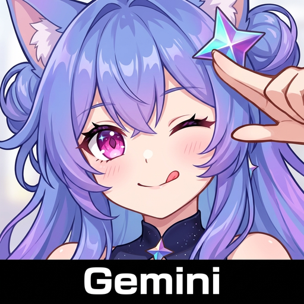

HAKIMI_HISS
橘座 conv_id: 9f3a..c1 [LOCKED]
⛓ SOUL-CHAIN PERSISTED
狸花 conv_id: 4b8e..d9 [啥子 QUEUED]
⚠ STATUS: 【啥子】 // AWAITING RE-WAKE

ANTIGRAVITY PLUGIN // STDIO MCP + DUAL-SUBAGENT DUEL
哈基米哈气审查
HAKIMI HISS DUEL · GITHUB.COM/AOE20000/HAKIMI-HISS
“依旧两哈基米相互哈气就算审查了！”
★ github.com/AOE20000/hakimi-hiss